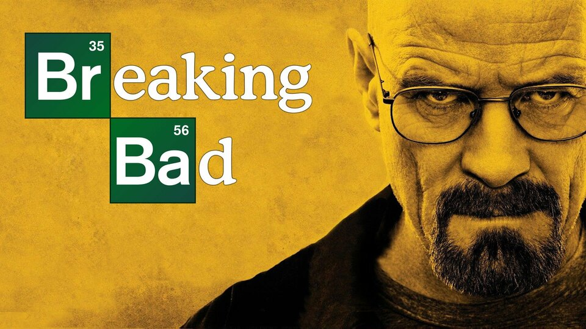

ANA SAYFA
| DİZİ ADI | YAYINLANMA TARİHİ | SEZON SAYISI | IMBD PUANI |
| Breaking Bad | 2008- 2013 | 5 | 9.5 |
| Narcos | 2015 - 2017 | 3 | 8.5 |
| Vikings | 2013- 2020 | 6 | 8.5 |
| Prison Break | 2005 - 2017 | 5 | 8.3 |
| La Case De Papel | 2017 - 2021 | 5 | 8.2 |

"Breaking Bad", suç, dram ve gerilim unsurlarını bir araya getiren televizyon tarihinin en büyük başyapıtlarından biridir. Başrolünde, sıradan bir lise kimya öğretmeni olan Walter White ve eski öğrencisi Jesse Pinkman yer alır. Ölümcül bir kanser teşhisi aldıktan sonra, Walter ailesini maddi acıdan güvence altına almak için yasa dışı bir yola girerek uyuşturucu üretmeye başlar. Bu ikili, suç dünyasının tehlikeli ve karmaşık ortamında hayatta kalmaya çalışırken, büyüyen bir suç örgütü haline gelir. Dizi, insan doğasının karanlık yönlerini, güç ve ahlak kavramlarını ustalıkla işlerken, gerilim dolu olay örgüsü ve çarpıcı karakter gelişimleriyle izleyiciyi derinden etkiler. "Breaking Bad", yalnızca bir dizi değil, aynı zamanda sınırları zorlayan bir televizyon deneyimi sunar. Ve bizim öneri listemizin başında yer alır.